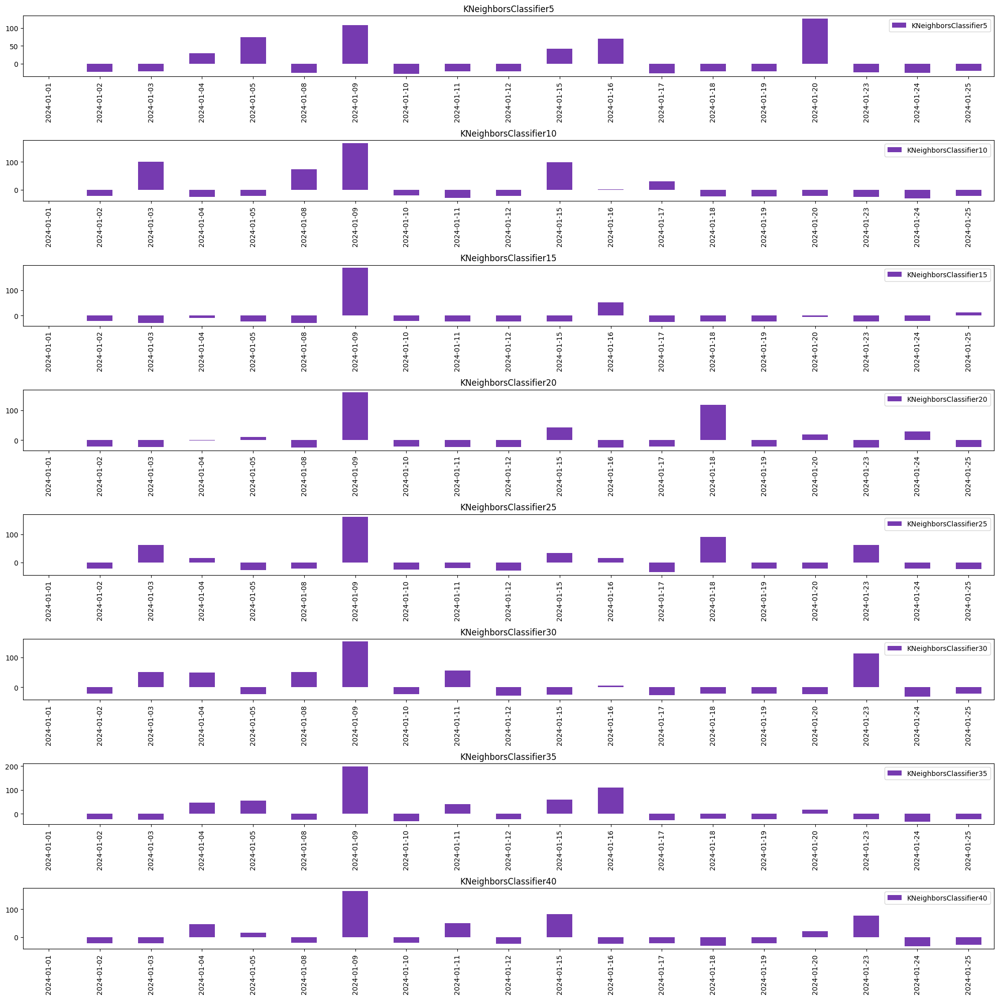

[Rework] Clustering Approach#
from collections import Counter
import pandas as pd
from glob import glob
import matplotlib.pyplot as plt
import talib
from tqdm.notebook import tqdm
from backtesting import Backtest, Strategy
# from sklearn.ensemble import RandomForestClassifier
# from sklearn.tree import DecisionTreeClassifier
import numpy as np
import pandas as pd
from sklearn.neighbors import KNeighborsClassifier
from sklearn.model_selection import train_test_split
from sklearn.metrics import classification_report
import warnings
warnings.filterwarnings('ignore')
def get_X(
data: pd.DataFrame
):
return data.filter(like='X').values
def get_y(
data: pd.DataFrame,
shift_window: int = 4,
q_filter: float = .25
):
y = data.close.pct_change(shift_window).shift(-shift_window)
f_val = data.close.pct_change(shift_window).abs().quantile(q_filter)
y[y.between(-f_val, f_val)] = 0
y[y > 0] = 1
y[y < 0] = -1
return y, f_val
def feature_engineer(
data: pd.DataFrame,
shift_window: int = 4,
):
close_ = data.close
upperband, _, lowerband = talib.BBANDS(
close_,
timeperiod=20,
nbdevup=2,
nbdevdn=2,
matype=0
)
sma05 = talib.SMA(close_, 5)
sma10 = talib.SMA(close_, 10)
sma20 = talib.SMA(close_, 20)
sma50 = talib.SMA(close_, 50)
sma100 = talib.SMA(close_, 100)
data['X_SMA05'] = (close_ - sma05) / close_
data['X_SMA10'] = (close_ - sma10) / close_
data['X_SMA20'] = (close_ - sma20) / close_
data['X_SMA50'] = (close_ - sma50) / close_
data['X_SMA100'] = (close_ - sma100) / close_
data['X_DELTA_SMA10'] = (sma10 - sma20) / close_
data['X_DELTA_SMA20'] = (sma20 - sma50) / close_
data['X_DELTA_SMA50'] = (sma50 - sma100) / close_
data['X_BB_upper'] = (upperband - close_) / close_
data['X_BB_lower'] = (lowerband - close_) / close_
data['X_BB_width'] = (upperband - lowerband) / close_
data['X_ROLLING_DIFF_Q05'] = data.close.diff(
shift_window).rolling(20).quantile(.05)
data['X_ROLLING_DIFF_Q25'] = data.close.diff(
shift_window).rolling(20).quantile(.25)
data['X_ROLLING_DIFF_Q50'] = data.close.diff(
shift_window).rolling(20).quantile(.50)
data['X_ROLLING_DIFF_Q75'] = data.close.diff(
shift_window).rolling(20).quantile(.75)
data['X_ROLLING_DIFF_Q95'] = data.close.diff(
shift_window).rolling(20).quantile(.95)
data['X_ROLLING_SKEW'] = data.close.rolling(20).skew()
data['X_ROLLING_KURT'] = data.close.rolling(20).kurt()
data['X_day'] = data.index.dayofweek
data['X_hour'] = data.index.hour
data = data.dropna().astype(float)
return data
def get_clean_Xy(
df: pd.DataFrame,
q_filter: float = .75
):
"""Return (X, y) cleaned of NaN values"""
X = get_X(df)
y, f_val = get_y(df, q_filter=q_filter)
y = y.values
isnan = np.isnan(y)
X = X[~isnan]
y = y[~isnan]
return X, y, f_val
def load(file_):
try:
_df = pd.read_csv(file_, parse_dates=True)
_df.datetime = pd.to_datetime(_df.datetime)
_df['date'] = _df.datetime.dt.date
_df.set_index('datetime', inplace=True)
return _df
except Exception as e:
return pd.DataFrame()
def load_historical_data(path_pattern, shift_window=4):
file_df = pd.DataFrame(
[
{
'stock_code': file_.split('/')[-2],
'path': file_,
} for file_ in glob(path_pattern)
]
)
if file_df.empty:
return pd.DataFrame()
df_map = {}
for stock, group in tqdm(file_df.groupby('stock_code'), desc=path_pattern):
df_map[stock] = pd.concat(
list(
map(
load,
sorted(group.path.tolist())
)
)
).sort_index()
nifty_df = df_map[stock]
if 'only_date' in nifty_df.columns:
nifty_df.drop(columns=['only_date'], inplace=True)
groups = []
for _, group in nifty_df.groupby('date'):
groups.append(
feature_engineer(
group[['open', 'high', 'low', 'close']],
shift_window=shift_window
)
)
return pd.concat(groups)
training_data = pd.concat(
[
load_historical_data(
'/workspace/nifty/NIFTY/201*.csv'
), load_historical_data(
'/workspace/nifty/NIFTY/2020*.csv'
), load_historical_data(
'/workspace/nifty/NIFTY/2021*.csv'
), load_historical_data(
'/workspace/nifty/NIFTY/2022*.csv'
), load_historical_data(
'/workspace/nifty/NIFTY/20230*.csv'
), load_historical_data(
'/workspace/nifty/NIFTY/20231*.csv'
)
]
)
test_data = pd.concat(
[
load_historical_data(
# '/workspace/nifty/NIFTY/20231*.csv'
# ), load_historical_data(
'/workspace/nifty/NIFTY/2024*.csv'
)
]
)
X, y, f_val = get_clean_Xy(training_data, q_filter=.40)
X_train, X_test, y_train, y_test = train_test_split(
X, y,
test_size=.4,
random_state=0
)
train_X, train_y = [], []
max_counts = Counter(y_train).most_common()[0][1]
cls = 1
for cls in set(y_train):
cls_index = (y_train == cls).nonzero()[0]
resample_index = np.random.randint(0, len(cls_index), max_counts)
train_X.append(X_train[resample_index]),
train_y.append(y_train[resample_index])
train_X = np.concatenate(train_X)
train_y = np.concatenate(train_y)
train_X.shape, train_y.shape
((435426, 20), (435426,))
class MLTrainOnceStrategy(Strategy):
f_val = None # 0.4%
clf = None
_pbar = None
daily_loss_limit = 20
def __init__(self, broker, data, params):
super().__init__(broker, data, params)
self.clf = params['clf']
self.f_val = params['f_val']
self._pbar = tqdm(
total=len(data)-1,
leave=False,
)
def _is_trading_window(self):
if (
self.data.index[-1].hour == 15 and
self.data.index[-1].minute > 20
) or (
self.data.index[-1].hour == 9 and
self.data.index[-1].minute < 30
):
return False
return True
def init(self):
self.forecasts = self.I(lambda: np.repeat(
np.nan, len(self.data)), name='forecast')
def next(self):
closed_pnl = [trade.pl for trade in self.closed_trades]
if self._pbar is not None:
try:
mean_pnl = np.quantile(
np.array(
closed_pnl
),
[.05, .25, .5, .75, .95]
).round(1)
except Exception:
mean_pnl = np.zeros(5)
self._pbar.update(1)
self._pbar.set_description(
f'{self.clf.__class__.__name__} {mean_pnl}'
)
if not self._is_trading_window():
self.position.close()
return
current_date = self.data.index[-1].date()
todays_trades = np.sum(
[
trade.pl for trade in self.closed_trades
if trade.entry_time.date() == current_date
]
)
if todays_trades < -self.daily_loss_limit:
self.position.close()
return
high, low, close = self.data.High, self.data.Low, self.data.Close
current_time = self.data.index[-1]
X = get_X(self.data.df.iloc[-1:])
forecast = self.clf.predict(X)[0]
self.forecasts[-1] = forecast
upper, lower = close[-1] * (1 + np.r_[2, -1]*self.f_val)
if forecast == 1 and not self.position.is_long:
self.position.close()
self.buy(
size=1,
tp=upper,
sl=lower
)
elif forecast == -1 and not self.position.is_short:
self.position.close()
self.sell(
size=1,
tp=lower,
sl=upper
)
for trade in self.trades:
if current_time - trade.entry_time > pd.Timedelta('2 hours'):
if trade.is_long:
trade.sl = max(trade.sl, low)
else:
trade.sl = min(trade.sl, high)
mdf = pd.DataFrame()
classifiers = {}
cluster_matches = list(range(5, 41, 5))
for k in tqdm(cluster_matches):
classifiers[k] = KNeighborsClassifier(k)
classifiers[k].fit(X_train, y_train)
y_pred = classifiers[k].predict(X_test)
print(classification_report(y_test, y_pred))
bt = Backtest(
test_data.rename(
{
'open': 'Open',
'high': 'High',
'low': 'Low',
'close': 'Close',
},
axis=1
),
MLTrainOnceStrategy,
cash=30000,
)
stats = bt.run(clf=classifiers[k], f_val=f_val)
stats['K'] = k
mdf[classifiers[k].__class__.__name__+str(k)] = stats
# print(classification_report(y_test, y_pred))
mdf.T
precision recall f1-score support
-1.0 0.42 0.50 0.45 71398
0.0 0.49 0.54 0.52 96381
1.0 0.48 0.32 0.39 73744
accuracy 0.46 241523
macro avg 0.46 0.45 0.45 241523
weighted avg 0.47 0.46 0.46 241523
precision recall f1-score support
-1.0 0.41 0.40 0.40 71398
0.0 0.48 0.57 0.53 96381
1.0 0.43 0.33 0.37 73744
accuracy 0.45 241523
macro avg 0.44 0.44 0.43 241523
weighted avg 0.44 0.45 0.44 241523
precision recall f1-score support
-1.0 0.40 0.37 0.38 71398
0.0 0.48 0.59 0.53 96381
1.0 0.42 0.32 0.36 73744
accuracy 0.44 241523
macro avg 0.43 0.43 0.43 241523
weighted avg 0.44 0.44 0.44 241523
precision recall f1-score support
-1.0 0.39 0.34 0.36 71398
0.0 0.47 0.62 0.54 96381
1.0 0.41 0.30 0.35 73744
accuracy 0.44 241523
macro avg 0.43 0.42 0.42 241523
weighted avg 0.43 0.44 0.43 241523
precision recall f1-score support
-1.0 0.39 0.31 0.35 71398
0.0 0.47 0.63 0.54 96381
1.0 0.41 0.31 0.35 73744
accuracy 0.44 241523
macro avg 0.42 0.42 0.41 241523
weighted avg 0.43 0.44 0.43 241523
precision recall f1-score support
-1.0 0.39 0.30 0.34 71398
0.0 0.47 0.64 0.54 96381
1.0 0.40 0.30 0.34 73744
accuracy 0.44 241523
macro avg 0.42 0.41 0.41 241523
weighted avg 0.43 0.44 0.42 241523
precision recall f1-score support
-1.0 0.38 0.29 0.33 71398
0.0 0.47 0.65 0.55 96381
1.0 0.40 0.29 0.34 73744
accuracy 0.44 241523
macro avg 0.42 0.41 0.41 241523
weighted avg 0.42 0.44 0.42 241523
precision recall f1-score support
-1.0 0.39 0.28 0.32 71398
0.0 0.47 0.66 0.55 96381
1.0 0.40 0.29 0.34 73744
accuracy 0.43 241523
macro avg 0.42 0.41 0.40 241523
weighted avg 0.42 0.43 0.42 241523
| Start | End | Duration | Exposure Time [%] | Equity Final [$] | Equity Peak [$] | Return [%] | Buy & Hold Return [%] | Return (Ann.) [%] | Volatility (Ann.) [%] | ... | Avg. Trade [%] | Max. Trade Duration | Avg. Trade Duration | Profit Factor | Expectancy [%] | SQN | _strategy | _equity_curve | _trades | K | |
|---|---|---|---|---|---|---|---|---|---|---|---|---|---|---|---|---|---|---|---|---|---|
| KNeighborsClassifier5 | 2024-01-01 10:53:00 | 2024-01-25 15:29:00 | 24 days 04:36:00 | 42.582212 | 30294.86096 | 30398.907411 | 0.98287 | -1.68582 | 7.954089 | 2.928871 | ... | 0.001427 | 0 days 00:31:00 | 0 days 00:02:00 | 1.111294 | 0.001431 | 1.448737 | MLTrainOnceStrategy(clf=,f_val=0.0002575537188... | Equity DrawdownPct ... | Size EntryBar ExitBar EntryPrice E... | 5 |
| KNeighborsClassifier10 | 2024-01-01 10:53:00 | 2024-01-25 15:29:00 | 24 days 04:36:00 | 49.084454 | 30281.010538 | 30466.133553 | 0.936702 | -1.68582 | 7.919483 | 3.356402 | ... | 0.00113 | 0 days 00:17:00 | 0 days 00:02:00 | 1.090343 | 0.001134 | 1.291994 | MLTrainOnceStrategy(clf=,f_val=0.0002575537188... | Equity DrawdownPct... | Size EntryBar ExitBar EntryPrice ... | 10 |
| KNeighborsClassifier15 | 2024-01-01 10:53:00 | 2024-01-25 15:29:00 | 24 days 04:36:00 | 40.54559 | 29977.505404 | 30166.70492 | -0.074982 | -1.68582 | -2.690458 | 2.673598 | ... | -0.000126 | 0 days 00:44:00 | 0 days 00:02:00 | 0.990954 | -0.000121 | -0.113832 | MLTrainOnceStrategy(clf=,f_val=0.0002575537188... | Equity DrawdownPct... | Size EntryBar ExitBar EntryPrice E... | 15 |
| KNeighborsClassifier20 | 2024-01-01 10:53:00 | 2024-01-25 15:29:00 | 24 days 04:36:00 | 48.654709 | 30102.243059 | 30248.255829 | 0.34081 | -1.68582 | 5.899708 | 2.960592 | ... | 0.000418 | 0 days 00:44:00 | 0 days 00:02:00 | 1.031446 | 0.000423 | 0.454832 | MLTrainOnceStrategy(clf=,f_val=0.0002575537188... | Equity DrawdownPct... | Size EntryBar ExitBar EntryPrice ... | 20 |
| KNeighborsClassifier25 | 2024-01-01 10:53:00 | 2024-01-25 15:29:00 | 24 days 04:36:00 | 49.30867 | 30186.379601 | 30299.499088 | 0.621265 | -1.68582 | 8.062842 | 3.044969 | ... | 0.000745 | 0 days 00:44:00 | 0 days 00:02:00 | 1.05713 | 0.00075 | 0.836232 | MLTrainOnceStrategy(clf=,f_val=0.0002575537188... | Equity DrawdownPct... | Size EntryBar ExitBar EntryPrice ... | 25 |
| KNeighborsClassifier30 | 2024-01-01 10:53:00 | 2024-01-25 15:29:00 | 24 days 04:36:00 | 41.405082 | 30193.121257 | 30303.291779 | 0.643738 | -1.68582 | 10.024038 | 3.162052 | ... | 0.000927 | 0 days 00:35:00 | 0 days 00:02:00 | 1.071608 | 0.000931 | 0.943273 | MLTrainOnceStrategy(clf=,f_val=0.0002575537188... | Equity DrawdownPct... | Size EntryBar ExitBar EntryPrice E... | 30 |
| KNeighborsClassifier35 | 2024-01-01 10:53:00 | 2024-01-25 15:29:00 | 24 days 04:36:00 | 40.78849 | 30276.621179 | 30430.854815 | 0.922071 | -1.68582 | 12.213567 | 3.691686 | ... | 0.001522 | 0 days 00:32:00 | 0 days 00:02:00 | 1.11934 | 0.001526 | 1.43817 | MLTrainOnceStrategy(clf=,f_val=0.0002575537188... | Equity DrawdownPct... | Size EntryBar ExitBar EntryPrice E... | 35 |
| KNeighborsClassifier40 | 2024-01-01 10:53:00 | 2024-01-25 15:29:00 | 24 days 04:36:00 | 44.35725 | 30202.521719 | 30322.990622 | 0.675072 | -1.68582 | 9.012317 | 3.113376 | ... | 0.000933 | 0 days 00:35:00 | 0 days 00:02:00 | 1.068354 | 0.000938 | 0.940074 | MLTrainOnceStrategy(clf=,f_val=0.0002575537188... | Equity DrawdownPct... | Size EntryBar ExitBar EntryPrice E... | 40 |
8 rows × 31 columns
# mdf = pd.DataFrame()
# # classifiers = {}
# for k in tqdm(cluster_matches):
# # classifiers[k] = KNeighborsClassifier(k)
# # classifiers[k].fit(X_train, y_train)
# # y_pred = classifiers[k].predict(X_test)
# # print(classification_report(y_test, y_pred))
# bt = Backtest(
# test_data.rename(
# {
# 'open': 'Open',
# 'high': 'High',
# 'low': 'Low',
# 'close': 'Close',
# },
# axis=1
# ),
# MLTrainOnceStrategy,
# cash=30000,
# )
# stats = bt.run(clf=classifiers[k], f_val=f_val)
# stats['K'] = k
# mdf[classifiers[k].__class__.__name__+str(k)] = stats
# # print(classification_report(y_test, y_pred))
# mdf.T
fig, ax = plt.subplots(figsize=(20, 20), sharex=True, sharey=True)
def random_hex_color():
return '#'+(''.join(np.random.choice(list('0123456789ABCDEF'), size=6).tolist()))
# ax.axhline(0, color='k', lw=1)
# ax.axhline(-20, color='k', lw=1)
mdf.T.apply(
lambda x: x._equity_curve.groupby(
x._equity_curve.index.date).Equity.last().diff(),
axis=1).T.plot.bar(subplots=True, ax=ax, color=random_hex_color())
# .plot.bar(ax=ax, color=random_hex_color())
# random_hex_color()
plt.tight_layout()
plt.show()

mdf.T[['Duration', '# Trades', 'Win Rate [%]']]
# ._trades[0]
| Duration | # Trades | Win Rate [%] | |
|---|---|---|---|
| KNeighborsClassifier5 | 24 days 04:36:00 | 938 | 54.904051 |
| KNeighborsClassifier10 | 24 days 04:36:00 | 1133 | 52.780229 |
| KNeighborsClassifier15 | 24 days 04:36:00 | 907 | 50.496141 |
| KNeighborsClassifier20 | 24 days 04:36:00 | 1123 | 50.222618 |
| KNeighborsClassifier25 | 24 days 04:36:00 | 1144 | 51.311189 |
| KNeighborsClassifier30 | 24 days 04:36:00 | 960 | 50.208333 |
| KNeighborsClassifier35 | 24 days 04:36:00 | 823 | 51.032807 |
| KNeighborsClassifier40 | 24 days 04:36:00 | 988 | 51.315789 |
mdf.T._trades.apply(lambda tdf: tdf.groupby(tdf.EntryTime.dt.date).PnL.sum(
).quantile([.05, .25, .5, .60, .75, .95]).round(2))
# .T.plot.bar(subplots=True, figsize=(20, 20))
| 0.05 | 0.25 | 0.50 | 0.60 | 0.75 | 0.95 | |
|---|---|---|---|---|---|---|
| KNeighborsClassifier5 | -26.54 | -22.93 | -20.71 | -20.15 | 56.10 | 121.12 |
| KNeighborsClassifier10 | -29.98 | -24.08 | -22.63 | -20.88 | 51.45 | 113.47 |
| KNeighborsClassifier15 | -28.68 | -23.14 | -22.03 | -20.98 | -6.61 | 65.97 |
| KNeighborsClassifier20 | -24.96 | -23.16 | -21.05 | -20.79 | 15.12 | 122.30 |
| KNeighborsClassifier25 | -28.99 | -22.43 | -20.96 | 4.31 | 25.05 | 97.75 |
| KNeighborsClassifier30 | -28.71 | -23.22 | -21.52 | -20.79 | 50.05 | 116.82 |
| KNeighborsClassifier35 | -31.23 | -23.42 | -21.85 | 7.64 | 44.45 | 120.22 |
| KNeighborsClassifier40 | -30.18 | -22.76 | -20.19 | 1.31 | 34.11 | 90.41 |
# from option_history import get_nifty
# import requests
# requests.get('http://localhost:4003/login')
# nifty_df = get_nifty()
# nifty_df.columns = [col.lower() for col in nifty_df.columns]
# ndf = feature_engineer(nifty_df[['open', 'high', 'low', 'close']])
# bt = Backtest(
# ndf.rename(
# {
# 'open': 'Open',
# 'high': 'High',
# 'low': 'Low',
# 'close': 'Close',
# },
# axis=1
# ),
# MLTrainOnceStrategy,
# cash=30000,
# )
# t_stats = bt.run(clf=classifiers[1], f_val=f_val)
# t_stats._equity_curve.Equity.plot(figsize=(15, 5))
# print(
# (t_stats['Equity Final [$]']-30000) * .8 * 50 * 5,
# t_stats._trades.PnL.quantile([.05, .25, .5, .75, .95]),
# sep='\n'
# )
# t_stats